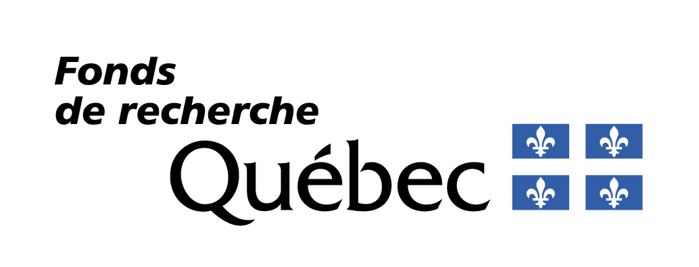
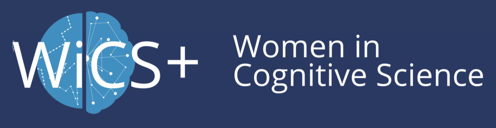
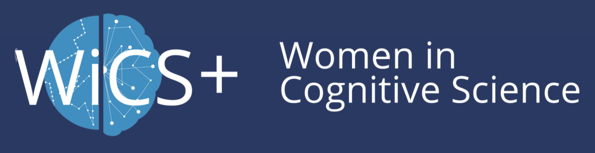
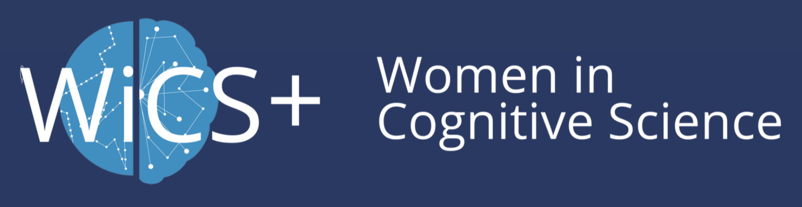
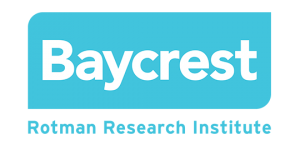
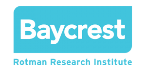

Funding & Awards
- Secured over half-a-million dollars in competitive research funding, including 10 national awards.
- Obtained uninterrupted funding across academic training, visiting scholar positions, and postdoctoral appointments.
Research Funding
Total Awarded: $518,046.72
N = 14 total | N = 10 national
NSERC — Natural Sciences and Engineering Research Council of Canada
FRQNT — Fonds de recherche du Québec – Nature et technologies

 




| Year | Award | Amount | Scope |
|---|---|---|---|
| 2025 | NSERC Postdoctoral Fellowship | $140,000 (2 years) | National |
| 2025 | Tri-Council Postdoctoral Top-Up | $24,000 (2 years) | Institutional |
| 2023 | Western University Postdoctoral Fellowship | $150,846.72 (2 years) | Institutional |
| 2022 | Women in Cognitive Science Small Research Grant | $1,500 | National |
| 2020 | NSERC Canada Graduate Scholarship (Doctoral), Ranked #1 in Psychology | $105,000 (3 years) | National |
| 2020 | (Declined) NSERC Complex Dynamics Training Grant | $26,000 | National |
| 2020 | NSERC Michael Smith Foreign Study Supplement | $6,000 | National |
| 2020 | Mitacs Globalink Research Award | $6,000 | National |
| 2019 | NSERC Complex Dynamics Training Grant | $26,000 | National |
| 2019 | (Declined) NSERC CGS-M | $17,500 | National |
| 2018 | FRQNT Undergraduate Student Research Award | $2,000 | Provincial |
| 2018 | NSERC Undergraduate Student Research Award | $5,600 | National |
| 2017 | FRQNT Undergraduate Student Research Award | $2,000 | Provincial |
| 2017 | NSERC Undergraduate Student Research Award | $5,600 | National |
Selected Honours & Awards
Total Awarded: $13,370.00
N = 14 total | N = 7 international
 


| Year | Award | Amount | Scope |
|---|---|---|---|
| 2025 | Travel Award, Association for Research in Otolaryngology (ARO) | $750 | International |
| 2024 | Accessible Presentation Award, Association for Research in Otolaryngology (ARO) | — | International |
| 2024 | Top Three Best Postdoc Talk, Association for Research in Otolaryngology (ARO) | — | International |
| 2023 | Jack and Rita Catherall Fund, Rotman Research Institute at Baycrest | $500 | Institutional |
| 2022 | Jack and Rita Catherall Fund, Rotman Research Institute at Baycrest | $500 | Institutional |
| 2021 | Top Cited Article, WIRES Cognitive Science | — | International |
| 2020 | Top Cited Article, WIRES Cognitive Science | — | International |
| 2019 | Finkler Graduate Fellowship, Rotman Research Institute at Baycrest | $3,000 | Institutional |
| 2019 | Ebbinghaus Award – Best Talk, Toronto Area Memory Group Meeting (TAMEG) | $75 | Regional |
| 2018 | Faculty of Arts & Science Admissions Award, University of Toronto | $5,000 | Institutional |
| 2017 | Celia Hendler Scholarship in Psychology, McGill University | $3,545 | Institutional |
| 2016–2018 | Dean’s Honour List (Top 10%), McGill University | — | Institutional |
| 2014–2015 | Dean’s Honour Roll (90%+ Average), Vanier College | — | Institutional |
| 2013 | Governor General's Academic Medal, F.A.C.E. School | — | Institutional |